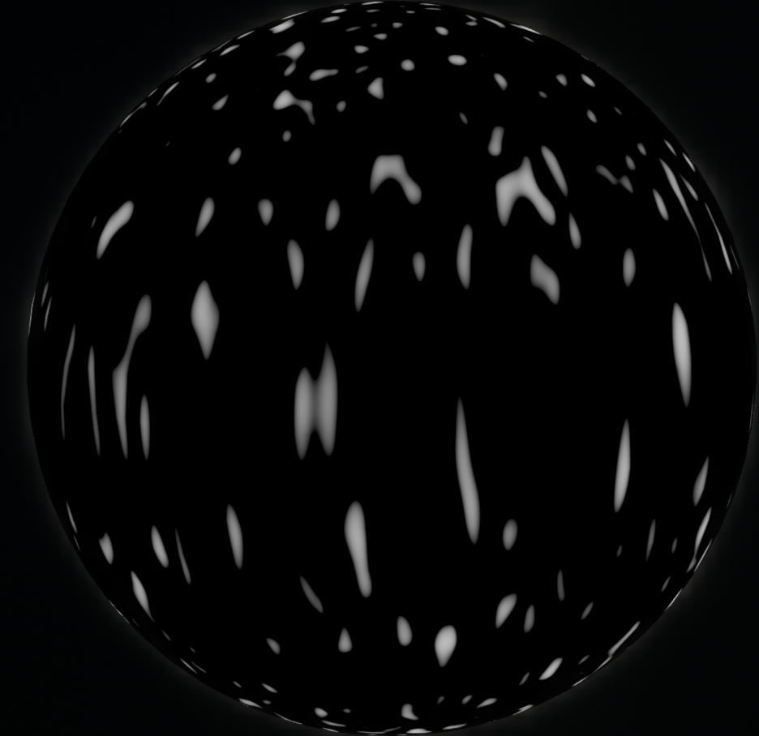
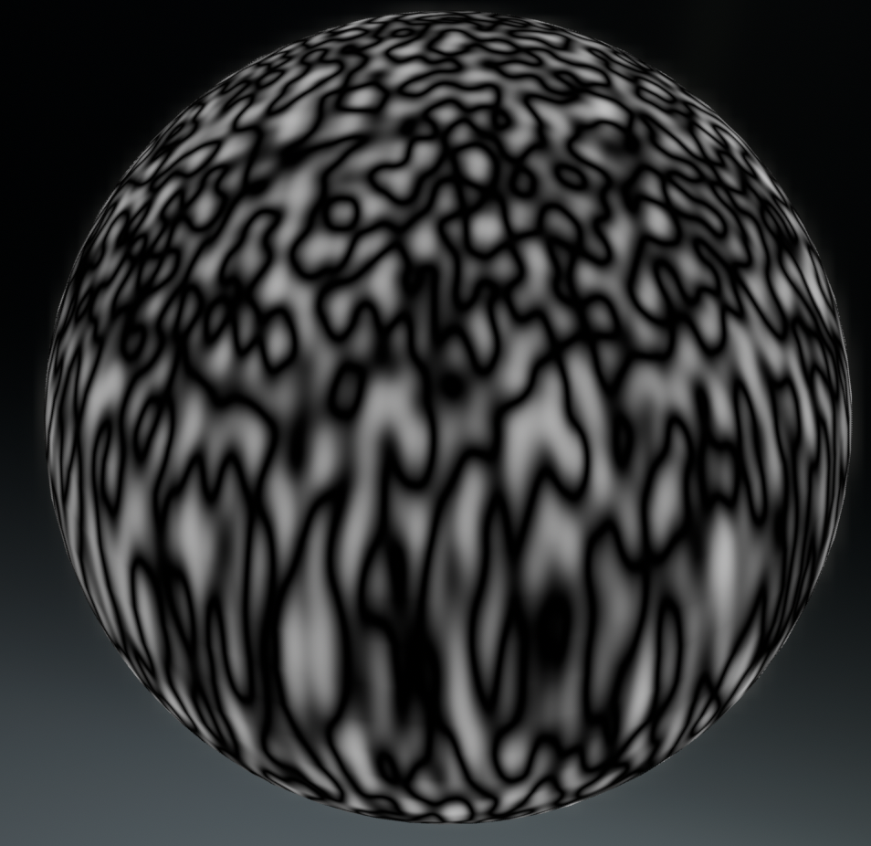
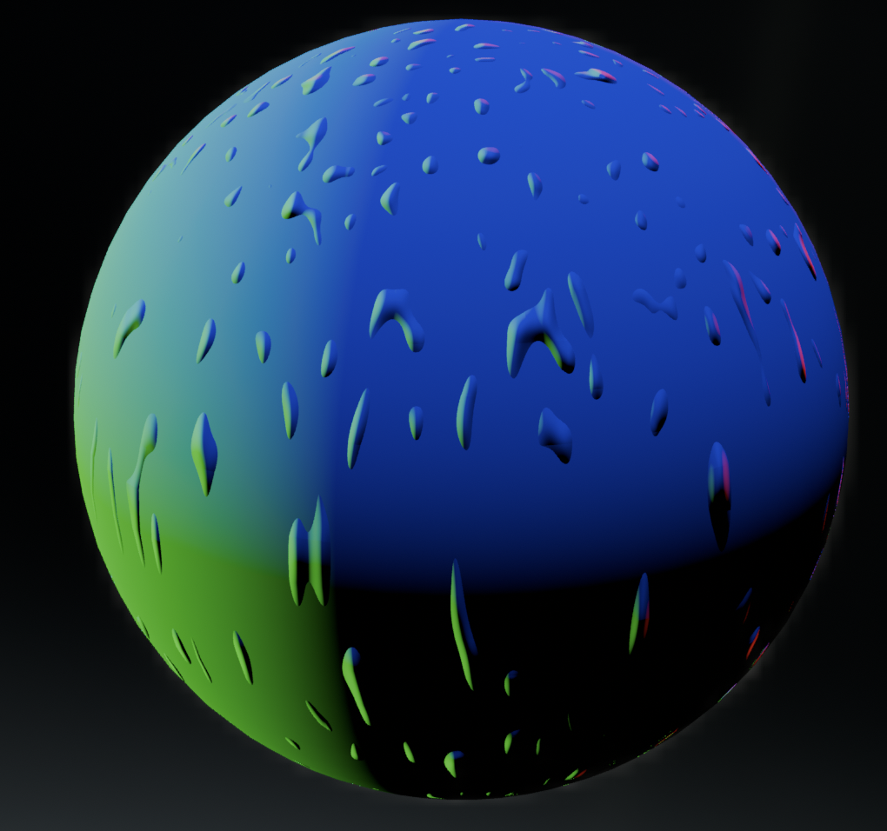
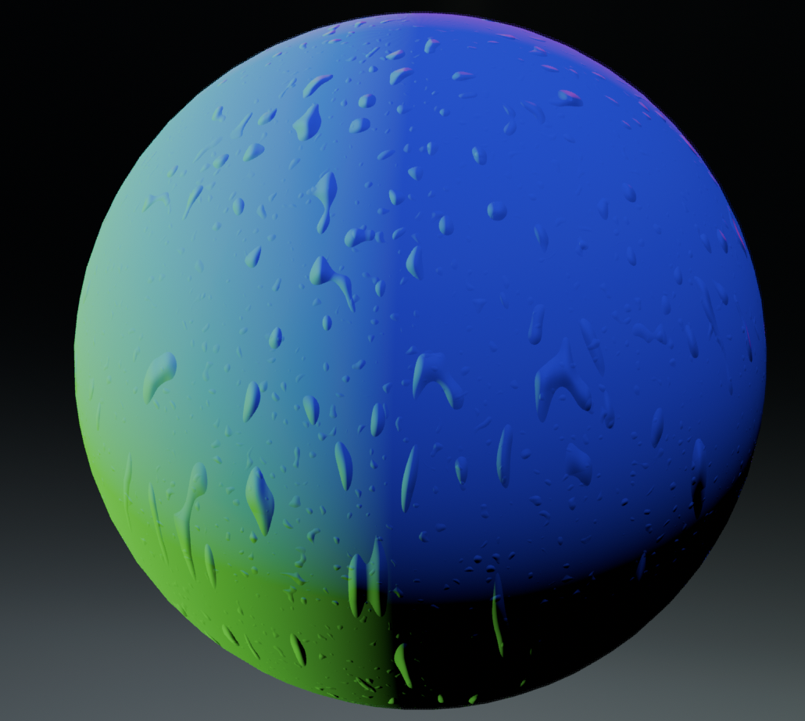
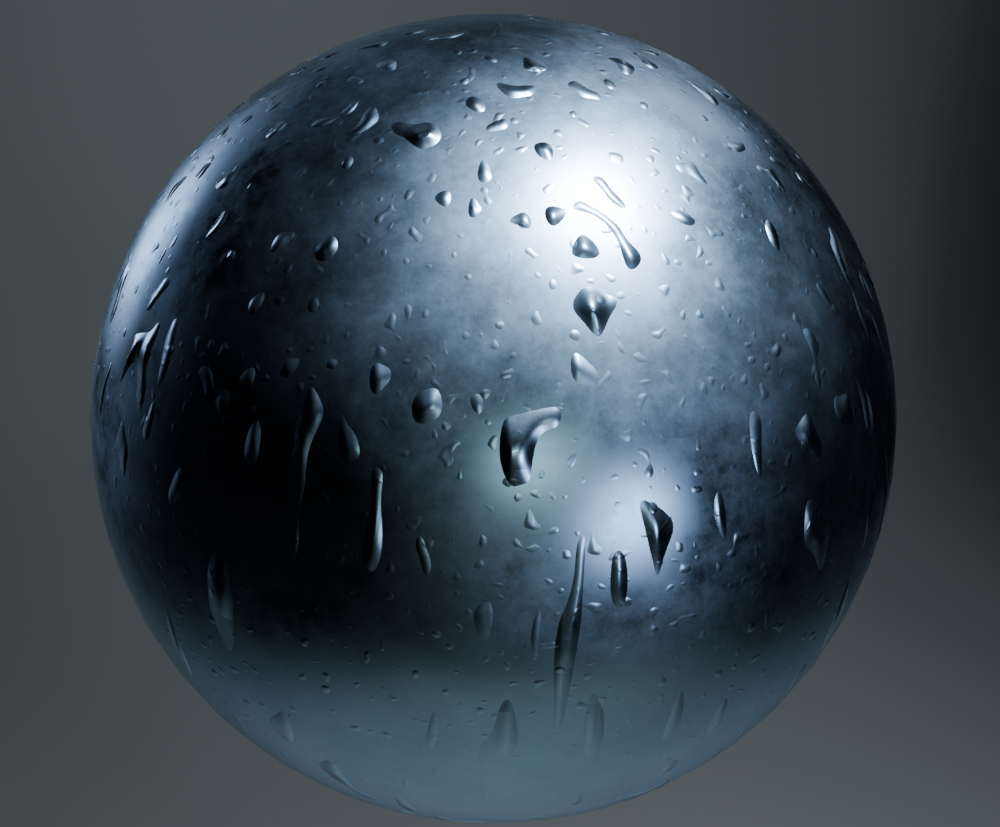

Problem
A weathered metallic surface with water droplets is difficult to paint by hand. The droplets need correct normal detail, specular response, and scale variation across the surface without relying on texture maps.
Solution
A procedural metal material built layer by layer in Blender's shader node editor: Musgrave multifractal for base variation, distorted Voronoi for droplet regions, normal mapping for surface relief, and a metallic BSDF for the final specular response.

I started with a Musgrave texture set to multifractal mode, mapped onto the sphere's surface coordinates. This gave a base layer of organic variation with streaky irregular bright spots against a dark field.

On top of that I layered a Voronoi texture, distorted with a Mapping node and Vector Math to break up the regular cell pattern into soft, blob like droplet regions.

Feeding the combined noise into a Normal Map node gave the first bump pass. The droplets read as small raised spots, but the scale was too fine and the shapes too uniform.

Adjusting the Musgrave scale and dimension settings pushed the bumps larger and more teardrop shaped, as if water is pooling and running down the surface.

Outcome
The finished shader plugs the normal map into a metallic BSDF with a dark base color and high roughness variation. Specular highlights on each droplet sit against brushed metal underneath, giving the sense of condensation on a cold steel surface, entirely from procedural nodes.